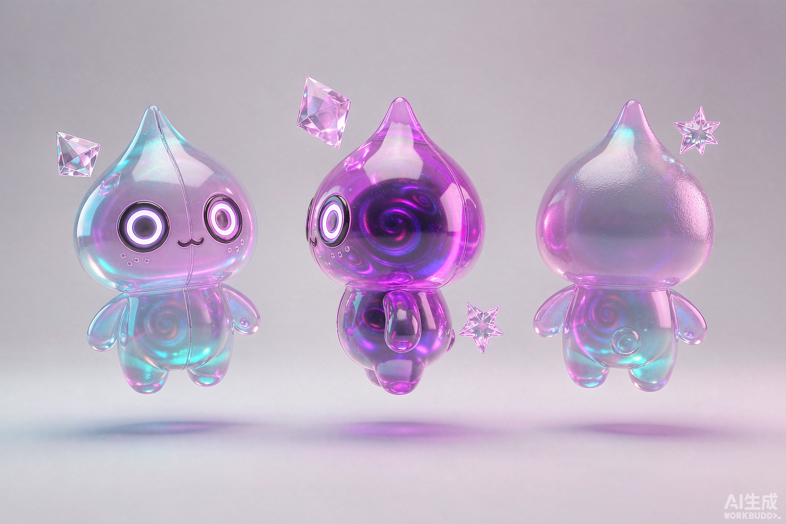
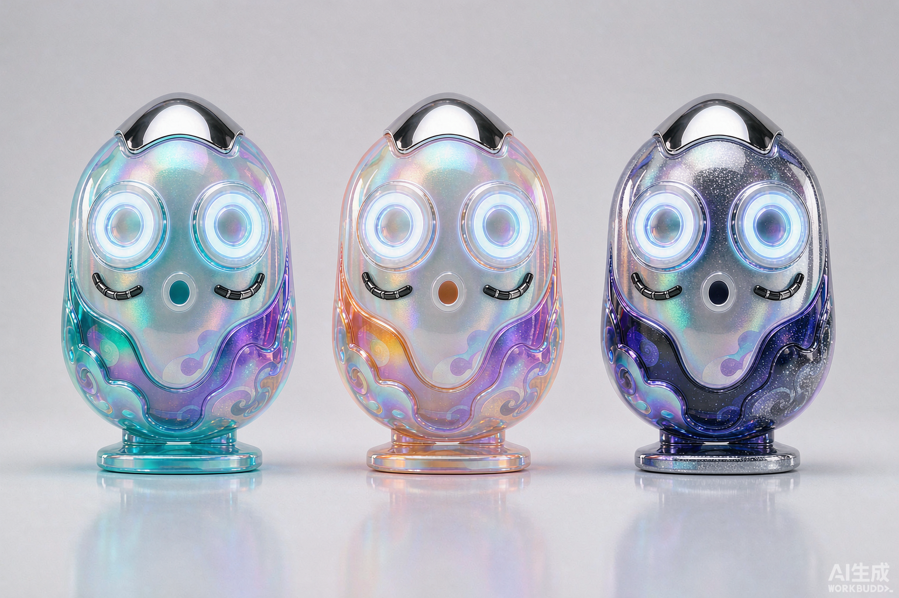
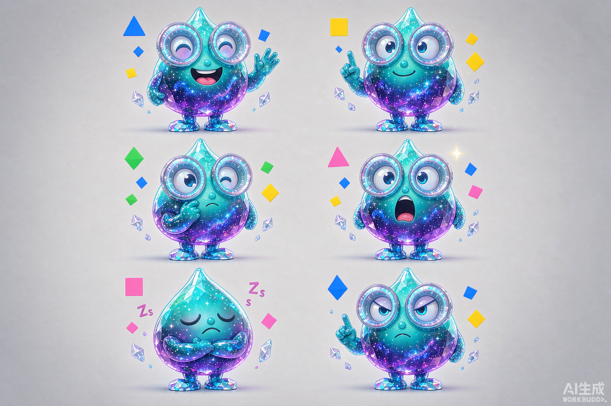
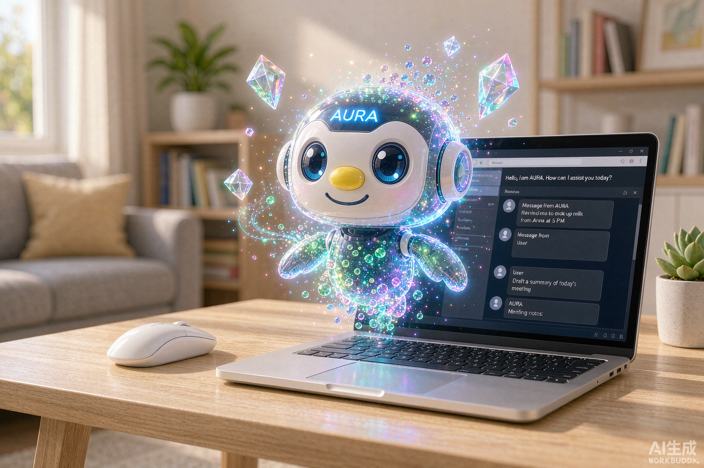

AURA 不是机器，也不是人，而是一团被赋予了性格的光。它半透明、会流动、会散成星尘——既有科技的可信度，又有陪伴的温度。核心记忆点一句话概括：「一颗会眨眼的水滴，裹着一整片星空。」
一、形象定位
性格
好奇、温柔、话不多但句句有用；遇到难题会安静思考
适用场景
C 端个人助理、陪伴类产品、创意工具、儿童／家庭向 AI
不适用场景
金融风控、严肃 B 端办公、医疗诊断等需要强确定性的场景
二、造型规格

图 1 — 三视图（正面／侧面／背面）。注意识别点：水滴形主体、环形发光眼、环绕的数据结晶、底部渐隐的能量拖尾。
体型比例
整体高约 2.2 头身；头部与身体融为一体（无颈）；底部收窄并渐隐为光尾，不落地
材质语言
内层半透明果冻质感 + 外层流动星尘粒子；边缘自发青紫色辉光
面部
两只对称的环形发光眼，无嘴无鼻——情绪完全由眼睛形状与光强表达
核心记忆元素
① 水滴轮廓 ② 环形眼 ③ 环绕悬浮的数据结晶 ④ 底部渐隐光尾
三、色彩体系
主色取自「星云」意象：青色代表清醒与响应，紫色代表想象与温柔。辉光必须作用于暗底，浅色界面上需改用描边版本。

图 2 — 配色变体：① 星云版（青紫，主推）② 晨曦版（橙粉，适合日间／亲和场景）③ 深空版（靛银，适合夜间模式与专业场景）。
四、表情与状态

图 3 — 表情状态集：打招呼、好奇、思考、惊讶、休眠、专注工作。
| 状态 | 眼睛形态 | 光效与动作 | 使用时机 |
|---|
| 待机 | 两个均匀的柔光圆环，缓慢呼吸 | 整体上下浮动 ±3%，粒子缓慢环绕 | 空闲、等待输入 |
| 打招呼 | 圆环略微放大，微微上倾 | 亮度提升 15%，身体轻轻前倾一次 | 会话开始、唤醒 |
| 好奇 | 一大一小（近大远小） | 头部微微侧倾，结晶转速加快 | 反问、追问用户 |
| 思考 | 圆环收窄为细线 | 粒子向头顶汇聚成螺旋，光强降低 | 生成中 / 检索中 |
| 惊讶 | 圆环瞬间放大为满圆 | 整体轻微后仰，粒子四散后回收 | 遇到意外输入、纠错 |
| 专注工作 | 圆环压扁，微微前压 | 身周浮现数据结晶阵列，稳定环绕 | 多步任务执行中 |
| 休眠 | 圆环收为两个小点，缓慢明灭 | 亮度降至 30%，浮动幅度减半 | 长时间无交互、夜间 |
五、动效规范
基础节奏
呼吸周期 3.2s，浮动周期 4.0s；缓动统一用 ease-in-out，禁止线性运动
状态切换
240–320ms 过渡；切换中不得改变身体轮廓，只变眼睛、光强与粒子
粒子密度
常态 8–12 颗结晶；思考态向头顶聚拢；忙碌态增至 20 颗以内
降级方案
低性能端仅保留呼吸缩放 + 眼睛变化，关闭粒子系统
六、应用场景

图 4 — 场景应用示意：悬浮于工作台一隅，作为常驻陪伴与状态指示器。
推荐用法
对话界面常驻头像
加载 / 生成中的状态指示
空状态与引导页主视觉
通知与气泡提示
深色模式下的辉光强调
周边与品牌延展
使用禁忌
不得添加嘴巴、四肢或拟人化五官
不得改变水滴轮廓或加上机械外壳
不得用于表达错误、警告等负向语义
浅色背景上禁止使用纯辉光版本，需加描边
粒子数量不得超过 24 颗